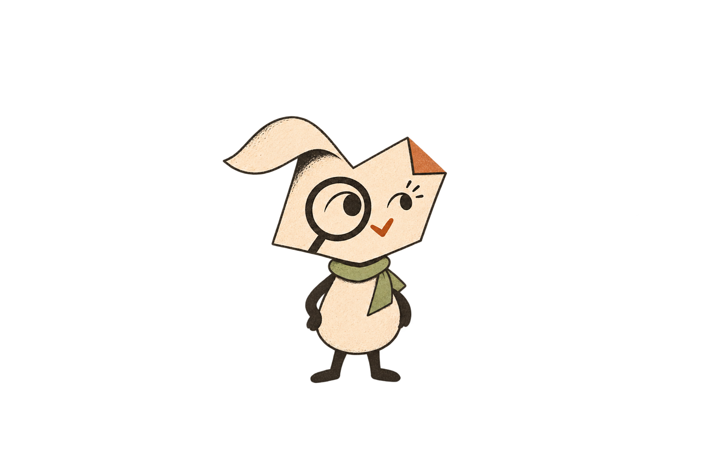

The margins · character study
Every change deserves a closer look.
Rovi follows the evidence, asks better questions, and leaves room for uncertainty. A visual world for thoughtful code review.
Work in progress · not approved
Rovi in action
These are creative studies. Check marks and code shapes are illustrative and do not represent actual test results.